Data Analyst & Business Intelligence Specialist
Transforming raw data into actionable insights through SQL, Power BI, Python, and AI/ML. Passionate about building dashboards, automating analysis, and delivering business value through data.
I am a Data Analyst and Business Intelligence professional based in Tarragona, Spain, with a strong foundation in data analysis, database design, and data visualization. My work spans from building interactive Power BI dashboards to developing Python-based financial models and AI/ML fraud-detection systems.
I hold an IBM Data Science Professional Certificate and have completed hands-on projects covering SQL database management, customer analytics, supply chain analysis, HR reporting, and predictive modelling.
My goal is to contribute to data-driven organisations where I can apply my technical skills in SQL, Power BI, Python, and machine learning to support strategic decisions and operational improvements.
A selection of real projects demonstrating hands-on skills in SQL, Power BI, Python, and AI/ML. The Power BI dashboards shown below now include public screenshots so recruiters can preview the visual quality of each report.
Designed and implemented a fully normalised relational database in SQL Server Management Studio (SSMS)
to manage customer data, purchase records, marketing campaigns, and product catalogues.
The schema includes 12+ interconnected tables: Clientes, Compra, Campania, Producto, Pais,
HoraCaptacion, and more. Wrote advanced queries including JOINs, subqueries,
GROUP BY aggregates, CASE statements, and a stored procedure Nuevo_cliente
for inserting new records safely.
Built an interactive Power BI dashboard analysing 2,237 clients segmented by education level, marital status, number of children, and years as a customer. Key business KPIs displayed: Total Clients, Average Income ($52K), Total Spend ($1.36M), and Average Purchase ($40.73). Used DAX to create dynamic measures and Power Query to clean and transform the CRM dataset. Enabled drill-down filtering with slicers for real-time segmentation.
Developed a comprehensive Supply Chain management dashboard in Power BI to monitor inventory levels, supplier performance, delivery timelines, and logistics KPIs. The report provides end-to-end visibility across the supply chain, enabling operations managers to identify bottlenecks, reduce lead times, and optimise stock levels. Applied advanced DAX calculations and time-intelligence functions for trend analysis over rolling periods.
Created an HR Analytics dashboard that provides HR managers with deep insights into workforce composition, attrition rates, salary distribution, and department performance. The report includes key metrics such as headcount, turnover rate, average tenure, and performance scores broken down by department, age group, and job role. Leveraged Power Query for data preparation and DAX for dynamic workforce calculations.
Developed a Python script to automate monthly financial statement analysis for an organisation. The model processes monthly revenues and expenses to calculate net profit, after-tax profit (30% tax rate), and profit margin percentages. Automatically identifies good months (profit above annual average), bad months (below average), and flags the best and worst months. Built using NumPy for vectorised calculations and Pandas for structured output.
Built a machine learning model to detect fraudulent credit card transactions
using a real-world Kaggle dataset (creditcard.csv). Implemented a full
ML pipeline in Python with Google Colab: data loading, cleaning (missing values & duplicates),
exploratory data analysis (fraud percentages, average amounts), feature scaling with
StandardScaler, and training a Support Vector Machine (SVC).
Evaluated model performance using a confusion matrix and classification report
(precision, recall, F1-score).
Designed and developed a command-line customer management application using
Python and Object-Oriented Programming (OOP) principles. The system (main.py +
gestion_clientes.py) allows creating, listing, searching, updating, and deleting
customer records. Applies class design, encapsulation, and modular architecture
to ensure maintainability and scalability. Demonstrates solid Python programming fundamentals
applicable to backend data pipelines and ETL processes.
Completed the capstone project of the IBM Data Science Professional Certificate on Coursera. Applied the full data science workflow: problem definition, data collection, exploratory analysis, data wrangling, machine learning, and result communication. Demonstrated proficiency in Python (Pandas, NumPy, Matplotlib, Scikit-learn) and Jupyter Notebooks throughout the course modules.
A visual selection of my Power BI dashboards. Each image is embedded directly in the portfolio so recruiters can preview the reports without downloading the project files. Click any screenshot to view it full size.
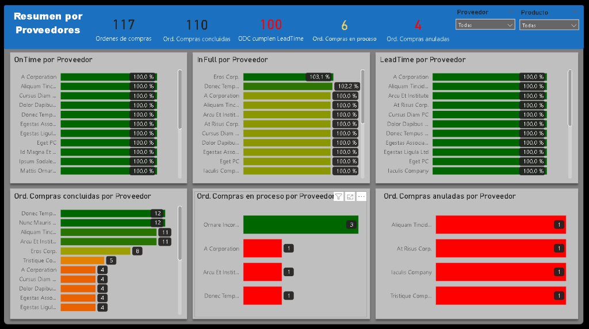
Dashboard focused on purchase orders, on-time delivery, in-full fulfilment, lead time, and supplier-level exceptions.
Power BI · Procurement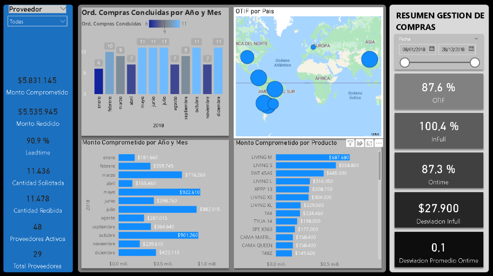
Executive summary of committed amount, received amount, OTIF, on-time performance, and supplier/product analysis.
Power BI · Procurement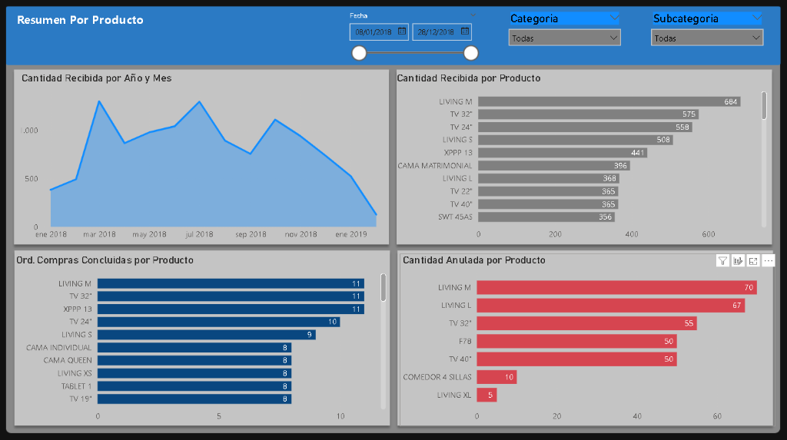
Visual report centred on quantities received, completed orders, cancellations, and product-category performance.
Power BI · Product Analytics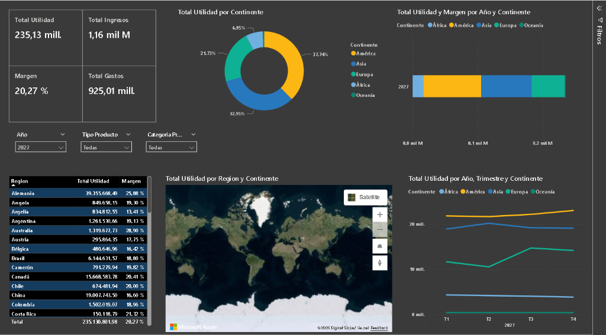
Global profitability analysis by continent, region, and year, including income, expenses, margins, map visuals, and quarterly trends.
Power BI · Profitability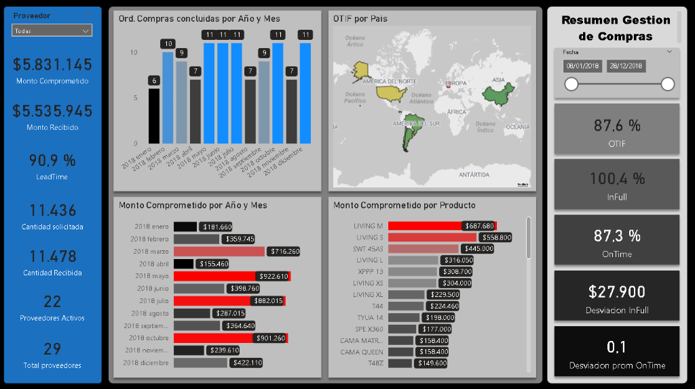
Alternative management view highlighting OTIF by country, committed amount by month, and product-level purchasing concentration.
Power BI · KPI Monitoring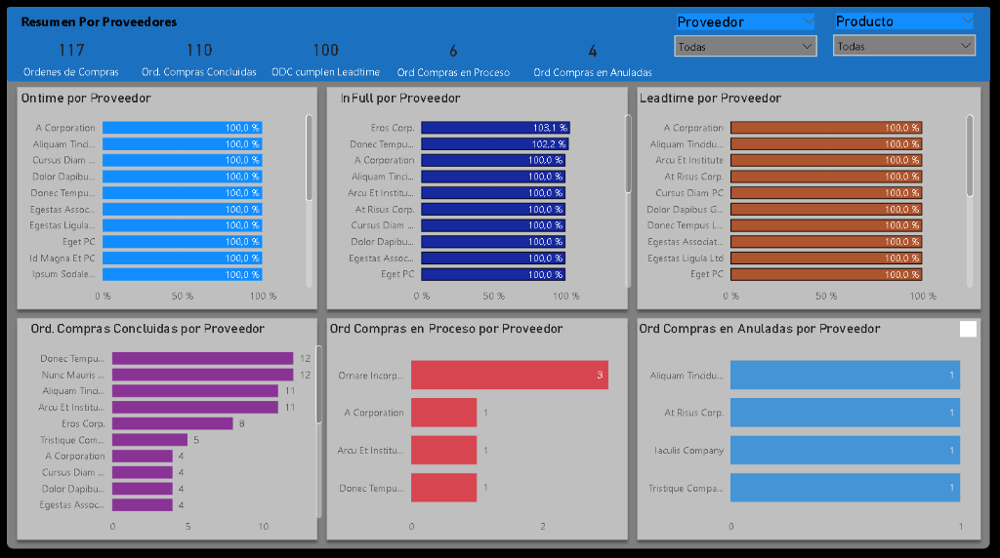
Comparative supplier dashboard with on-time, in-full, lead time, completed orders, in-process orders, and cancelled orders.
Power BI · Suppliers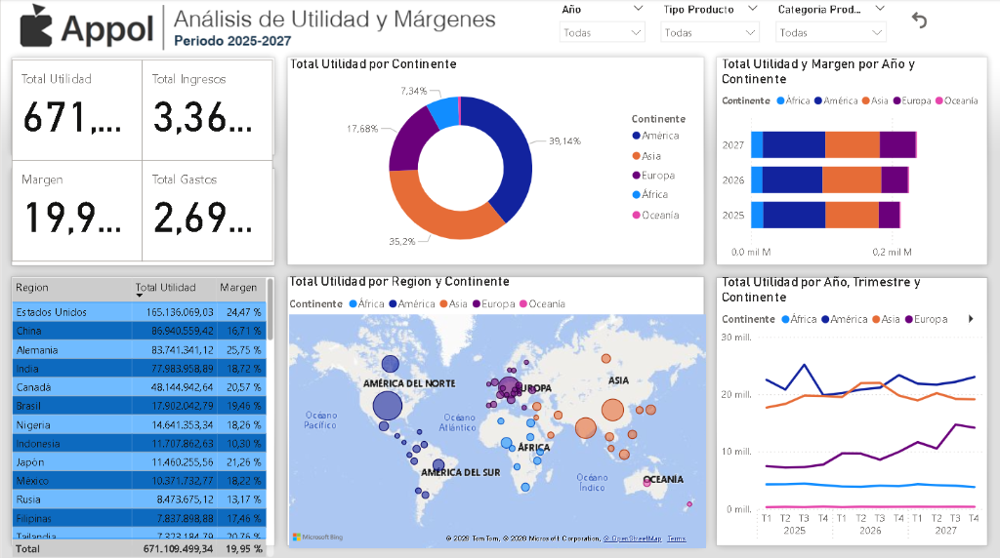
Branded business dashboard analysing total utility, revenue, expenses, regional performance, and continent-level profitability trends.
Power BI · Executive Dashboard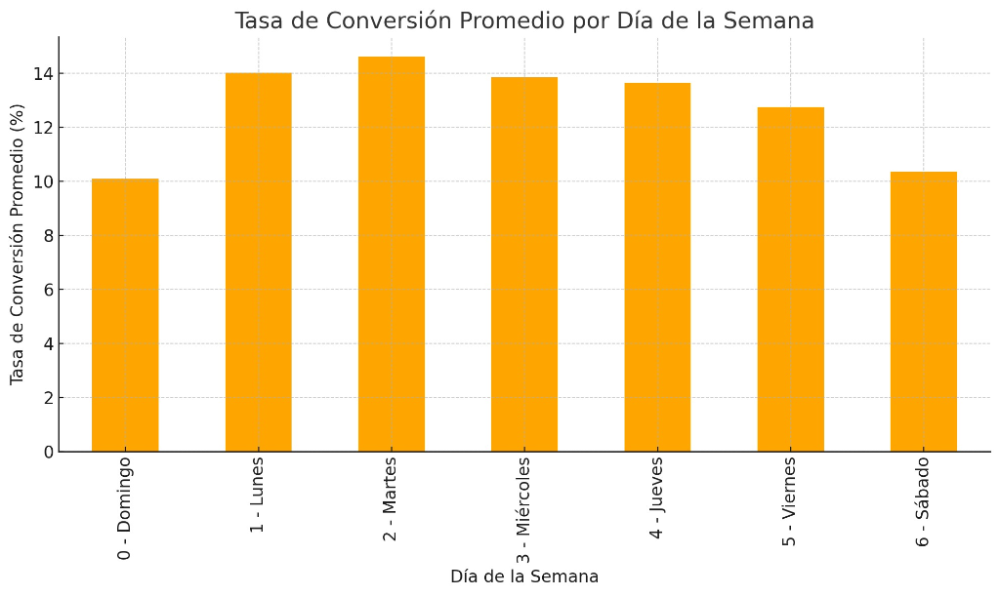
Focused visual showing average conversion performance by day of the week to support digital marketing and campaign optimisation.
Power BI · Marketing Analytics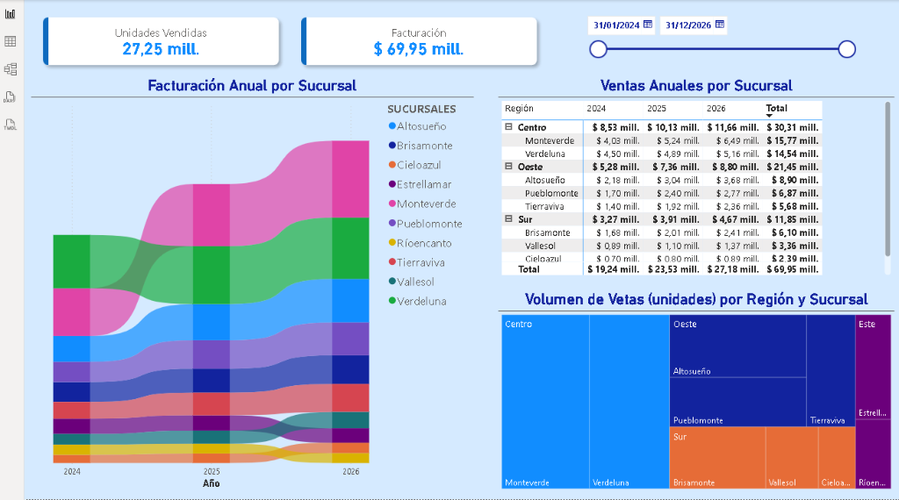
Sales performance dashboard with units sold, billing totals, Sankey flow visual, branch comparison, and regional sales treemap.
Power BI · Sales Analytics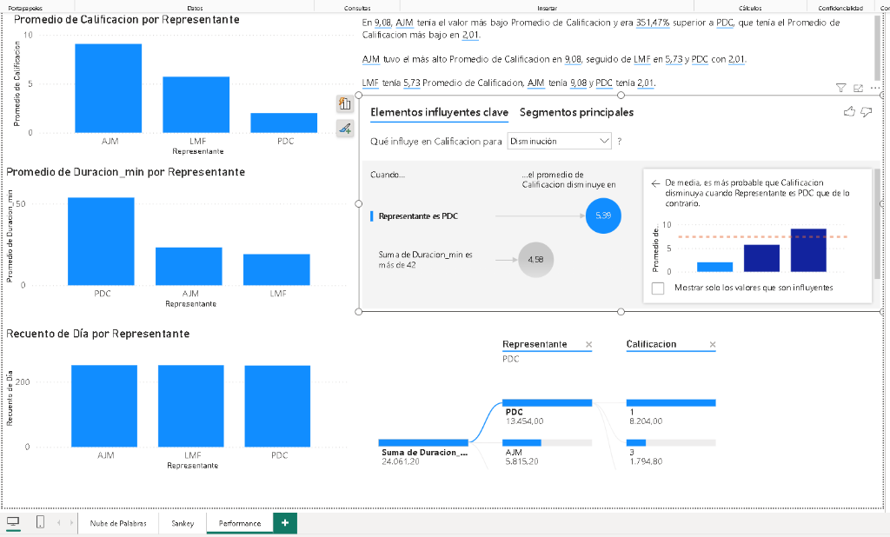
Performance analysis by representative, including average score, call duration, interaction count, and key influencer diagnostics.
Power BI · Performance Analytics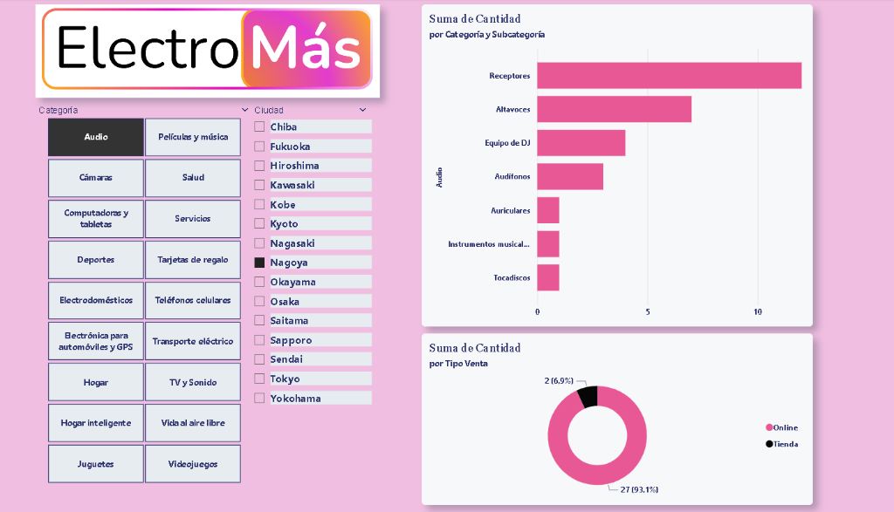
Retail report for category, subcategory, city, and sales channel analysis with a strong branded visual identity.
Power BI · Retail Analytics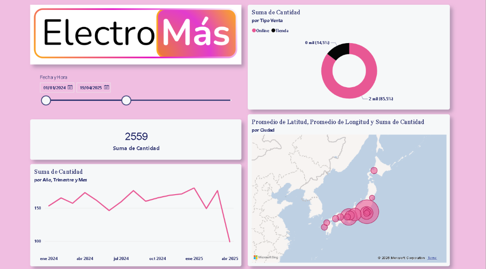
Geographical sales dashboard combining quantity trend analysis, online vs in-store mix, KPI cards, and city-level mapping.
Power BI · Geo AnalyticsCoursera · IBM
Microsoft / Coursera
Coursera / IBM
Self-directed learning
I am currently open to new opportunities in Data Analysis, BI, and Data Science roles. Feel free to reach out via email or LinkedIn.